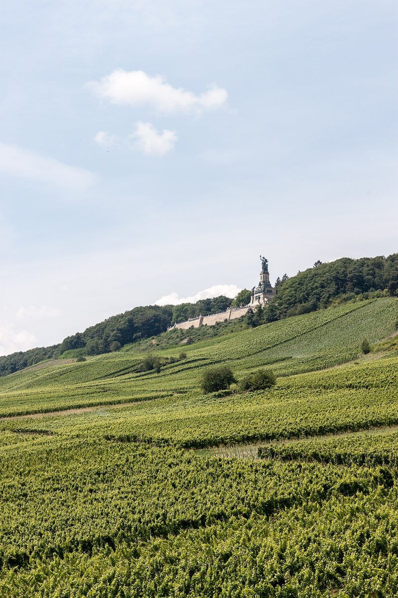

Discover the Enchanting Rheingau Vineyards: A Perfect German Escape

The Rheingau region in Germany is a dream destination for wine lovers and nature enthusiasts alike. Nestled along the Rhine River, this picturesque area is renowned for its rolling vineyards, charming villages, and world-class Riesling wines. Whether you’re planning a day trip or a longer stay, the Rheingau vineyards offer a perfect blend of relaxation, culture, and culinary delights.
How to Get There
The Rheingau region is easily accessible from major cities like Frankfurt and Wiesbaden. By car, the journey takes about an hour from Frankfurt, offering scenic views along the way. If you prefer public transport, trains run regularly to towns like Rüdesheim and Eltville, making it convenient to explore the area without a car.
Best Time to Visit
The best time to visit the Rheingau vineyards depends on your preferences. Spring and summer are ideal for outdoor activities, with blooming vineyards and warm weather perfect for hiking and cycling. Autumn is harvest season, offering a unique opportunity to witness the winemaking process and enjoy wine festivals. Winter, though colder, brings its own charm with cozy wine taverns and festive markets.
Top Highlights
1. Rüdesheim: This charming town is the gateway to the Rheingau vineyards. Stroll through the narrow Drosselgasse, visit the Niederwald Monument, and take a cable car ride for breathtaking views of the vineyards.
2. Eltville: Known as the ‘City of Roses and Wine,’ Eltville is home to beautiful gardens, historic castles, and excellent wineries. Don’t miss a visit to the Eberbach Abbey, a former Cistercian monastery with a rich wine-making history.
3. Johannisberg: Famous for its Riesling wines, Johannisberg is a must-visit for wine enthusiasts. Explore the Schloss Johannisberg vineyard and enjoy a tasting session to savor some of the region’s finest wines.
4. Hiking and Cycling The Rheingau region offers numerous hiking and cycling trails, allowing you to explore the vineyards and enjoy stunning views of the Rhine River. The Rheinsteig trail is particularly popular for its scenic beauty and well-marked paths.
5. Wine Tasting Tours: No visit to the Rheingau is complete without a wine tasting tour. Many wineries offer guided tours, where you can learn about the winemaking process and sample a variety of local wines.
Local Cuisine
Pair your wine with delicious local dishes for a complete culinary experience. Try traditional German fare like schnitzel, sausages, and pretzels, or opt for regional specialties such as Handkäs mit Musik (a type of marinated cheese) and Spundekäs (a creamy cheese dip). Many restaurants and wine taverns in the Rheingau region also serve seasonal dishes made with fresh, local ingredients.
Whether you’re a wine connoisseur, a nature lover, or simply looking for a peaceful getaway, the Rheingau vineyards have something for everyone. Pack your bags and get ready to explore this enchanting region that promises unforgettable memories.
Haiktec
- The Busy Dog Owner's Survival Guide: 7 Simple Steps to a Happy, Well-Behaved Pup
- Ultimate Black Forest Travel Budget Planner & Itinerary Tracker for Families (2026 Edition)
- Saarland & Mosel Family Adventures: 7 Easy Outdoor Trips for Kids & Parents
Text mit KI erstellt und automatisch geprueft.